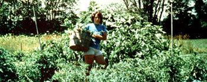

My first organic garden was started in someone else's field. It was a sprawling, 3/4-acre plot ... and gave me such a prodigious yield that I ended up with more vegetables than our two-person family could ever eat or preserve.
I didn't want to see such a valuable crop go to waste, and-since I was already a member of a storefront food coop in Newburyport, Massachusetts-I asked the folks at the cooperative if they would like to buy my overflow.
Most of the store's produce comes from the Chelsea markets and local farmers, but-in the true spirit of a coop-the people in charge of ordering prefer to purchase homegrown, organic crops from their membership whenever possible. As a result of that preference, my little parttime business- started by accident-is now a seasonal source of weekly spending money. Here are some of the things that my first two summers as a food supplier to one of these consumer-oriented stores taught me.
One of the keys to my success was my ability to market small amounts of unique vegetables which were not readily available from local stores. Also, large produce suppliers only sell by the box or crate. whereas a co-op-rather than waste money on items that might spoil-much prefers to buy small quantities of kohlrabi, scallions, turnips, Romano beans, and other less "universal" vegetables.
In addition, I learned that tomatoes are poor risks ... not only because they are carried by other suppliers, but also because this fruit has to be perfectly round and unblemished if it's to sell. In a store where the consumer can finger the goods, tomatoes with green tops, black marks, or unpleasing physiques will always be passed over. This "unnatural selection" process ultimately means waste for the co-op and bad public relations for you. It's best, therefore, to eat or preserve the lessthan-perfect-looking specimens of any vegetable.
The amount you'll be paid for your harvest is usually calculated by the pound or by the bunch ... and is based upon the market price of the produce you're offering or on that of its nearest vegetable equivalent. For instance, if the going rate for squash is 15 cents a pound, the co-op pays me that and then tacks on a few cents as a markup for the customer. Chard, if unlisted, goes for the wholesale price of, say, spinach.
Naturally, you should keep track of the supermarket, farm stand, and produce market prices. These change weekly, and your rates must be fair and competitive with other outlets, as well as profitable. With one season of experience behind me, I carefully perused the seed catalogs in search of some potential moneymakers to plant in a smaller backyard garden. My final choices included chard, Chinese chrysanthemums, chop suey greens, Chinese cabbage, radishes, kohlrabi, Jerusalem artichokes, snow peas, several varieties of lettuce, Romano and wax beans, and squash (spaghetti, melon, and bush scallop), as well as gourds and flowers I could dry.
I learned that sales improved if I functioned as my own public relations person ... by making and enacting suggestions or pricing and display. For example, unfamiliar items such as kohlrabi, spaghetti squash, and huge stuffing zucchini sold better when I posted recipes with the unusual produce. (This method also helped me create return customers for these vegetables! )
Soon, too, I learned the co-op's "traffic patterns", and began to deliver my wares to coincide with the busiest shopping times ... even if it meant several weekly drop-offs. I also found it was best to call ahead to make sure my fresh items would sell. If chard happened to be in plentiful (and inexpensive) supply one week, I processed my surplus for personal use.
This year-taking into account the small size of my current plot and the little surplus I have left over-my sales to the co-op haven't been "big business". In fact, I've only averaged about $8.00 a week, which I often "take out in trade" for other goods that I need. However, the money I've made has more than paid for all my seeds and other garden supplies.
With some extra effort, you could also sell dried beans, roasted sunflower and pumpkin seeds, parched corn, sprouting seeds (mung, radish, and mustard), sprouts themselves, homemade preserves and pickles, or even seeds from your own garden (although the latter might cut into your business during the following year!).
In addition-once a list of your planned surpluses is available-you'll be able to sell produce to preorder co-ops. And, it's been my experience that any goods the co-ops couldn't use found eager buyers at local restaurants. Health food stores and farmers' markets can also be fine outlets for gardeners who have extra crops.
Remember, too-if you really want to know how you're doing-that it pays to keep basic records ... so you'll be aware of what sells best, the average prices for each item, and the profits accrued.
The real attraction of this business, however, is its flexibility. It can be as large or as small as the grower's garden and time permit. Often, selling extra produce can be simply a matter of turning would-have-been waste into summercash.
|
 PHOTO BY THE AUTHOR |
|
|